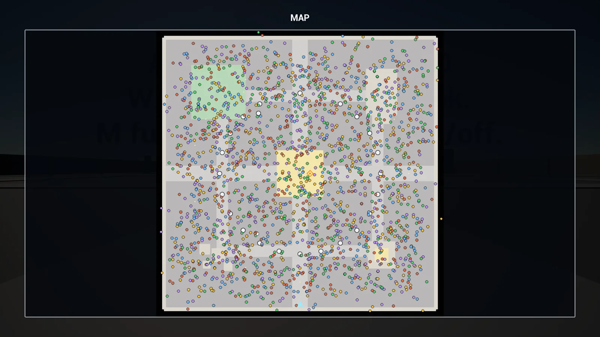
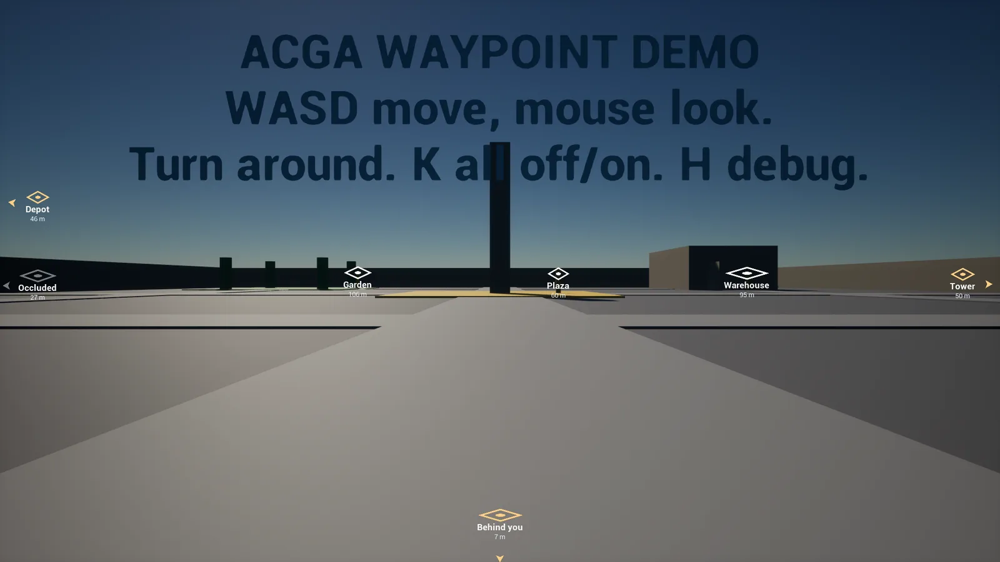

Unreal Engine plugins on Fab
Tools
Unreal Engine plugins I design and publish on Fab: drop-in C++ systems for navigation and UI that work in an existing project without changing its classes, and come out again cleanly. Every claim on their store pages is backed by a test or a benchmark that ships with the plugin.

C++ plugin · UE 5.6 – 5.8
Minimap & Full Map System
A HUD minimap and a full-screen map that draw thousands of moving markers without a widget each.
View tool
C++ plugin · UE 5.6 – 5.8
Screen Waypoint Markers
Objective markers that pin to the screen edge and point the right way, even when the target is behind you.
View tool